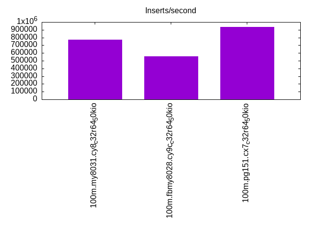
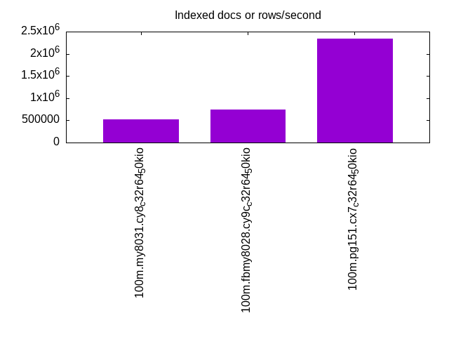
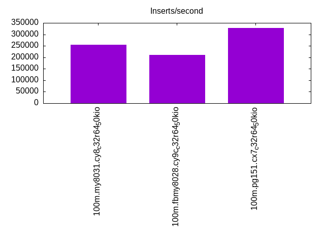
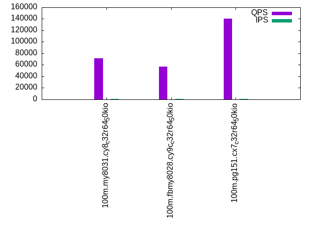
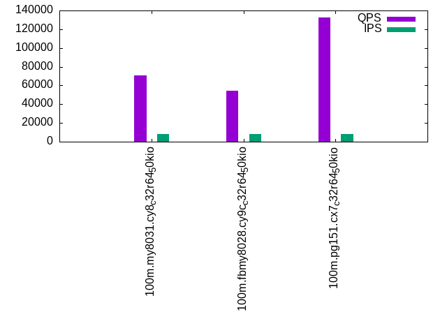

This is a report for the insert benchmark with 100M docs and 8 client(s). It is generated by scripts (bash, awk, sed) and Tufte might not be impressed. An overview of the insert benchmark is here and a short update is here. Below, by DBMS, I mean DBMS+version.config. An example is my8020.c10b40 where my means MySQL, 8020 is version 8.0.20 and c10b40 is the name for the configuration file.
The test server is an c6i.8xl with 16 cores, 16 HW threads (hyperthread disabled), 64G RAM and io2 storage (2T, 50K IOPs). The benchmark was run with 8 clients and there was 1 or 2 connections per client (1 for queries, 1 for inserts). The benchmark loads 75M rows without secondary indexes, creates secondary indexes, loads another 25M rows then does 3 read+write tests for one hour each that do queries as fast as possible with 100, 500 and then 1000 writes/second/client concurrent with the queries. The database is cached by the storage engine and the only IO is for writes. Clients and the DBMS share one server. The per-database configs are in the per-database subdirectories here.
The tested DBMS are:
The numbers are inserts/s for l.i0 and l.i1, indexed docs (or rows) /s for l.x and queries/s for q*.2. The values are the average rate over the entire test for inserts (IPS) and queries (QPS). The range of values for IPS and QPS is split into 3 parts: bottom 25%, middle 50%, top 25%. Values in the bottom 25% have a red background, values in the top 25% have a green background and values in the middle have no color. A gray background is used for values that can be ignored because the DBMS did not sustain the target insert rate. Red backgrounds are not used when the minimum value is within 80% of the max value.
| dbms | l.i0 | l.x | l.i1 | q100.1 | q500.1 | q1000.1 |
|---|---|---|---|---|---|---|
| 100m.my8031.cy8_c32r64_50kio | 773196 | 517931 | 255102 | 71823 | 71357 | 70760 |
| 100m.fbmy8028.cy9c_c32r64_50kio | 555556 | 751000 | 210084 | 56779 | 55366 | 54356 |
| 100m.pg151.cx7_c32r64_50kio | 937500 | 2346875 | 328947 | 140106 | 136468 | 132486 |
This lists the average rate of inserts/s for the tests that do inserts concurrent with queries. For such tests the query rate is listed in the table above. The read+write tests are setup so that the insert rate should match the target rate every second. Cells that are not at least 95% of the target have a red background to indicate a failure to satisfy the target.
| dbms | q100.1 | q500.1 | q1000.1 |
|---|---|---|---|
| my8031.cy8_c32r64_50kio | 797 | 3987 | 7978 |
| fbmy8028.cy9c_c32r64_50kio | 797 | 3987 | 7978 |
| pg151.cx7_c32r64_50kio | 797 | 3987 | 7976 |
| target | 800 | 4000 | 8000 |
l.i0: load without secondary indexes. Graphs for performance per 1-second interval are here.
Average throughput:
Insert response time histogram: each cell has the percentage of responses that take <= the time in the header and max is the max response time in seconds. For the max column values in the top 25% of the range have a red background and in the bottom 25% of the range have a green background. The red background is not used when the min value is within 80% of the max value.
| dbms | 256us | 1ms | 4ms | 16ms | 64ms | 256ms | 1s | 4s | 16s | gt | max |
|---|---|---|---|---|---|---|---|---|---|---|---|
| my8031.cy8_c32r64_50kio | 97.443 | 2.357 | 0.171 | 0.023 | 0.006 | 0.096 | |||||
| fbmy8028.cy9c_c32r64_50kio | 17.299 | 82.535 | 0.138 | 0.028 | nonzero | 0.065 | |||||
| pg151.cx7_c32r64_50kio | 97.179 | 2.810 | 0.011 | 0.010 |
Performance metrics for the DBMS listed above. Some are normalized by throughput, others are not. Legend for results is here.
ips qps rps rmbps wps wmbps rpq rkbpq wpi wkbpi csps cpups cspq cpupq dbgb1 dbgb2 rss maxop p50 p99 tag 773196 0 0 0.0 1171.3 201.2 0.000 0.000 0.002 0.266 109876 66.2 0.142 14 5.0 101.6 9.4 0.096 115976 75219 100m.my8031.cy8_c32r64_50kio 555556 0 0 0.0 879.3 199.5 0.000 0.000 0.002 0.368 61254 59.6 0.110 17 2.6 3.3 1.3 0.065 78117 9992 100m.fbmy8028.cy9c_c32r64_50kio 937500 0 0 0.0 1651.9 379.2 0.000 0.000 0.002 0.414 93756 62.2 0.100 11 7.2 19.4 0.0 0.010 146782 75739 100m.pg151.cx7_c32r64_50kio
l.x: create secondary indexes.
Average throughput:
Performance metrics for the DBMS listed above. Some are normalized by throughput, others are not. Legend for results is here.
ips qps rps rmbps wps wmbps rpq rkbpq wpi wkbpi csps cpups cspq cpupq dbgb1 dbgb2 rss maxop p50 p99 tag 517931 0 2762 181.1 10131.8 493.1 0.005 0.358 0.020 0.975 61310 30.6 0.118 9 11.1 107.7 14.0 0.009 NA NA 100m.my8031.cy8_c32r64_50kio 751000 0 2 0.1 584.7 132.0 0.000 0.000 0.001 0.180 2251 46.1 0.003 10 5.1 5.8 7.5 0.003 NA NA 100m.fbmy8028.cy9c_c32r64_50kio 2346875 0 0 0.0 2646.1 644.5 0.000 0.000 0.001 0.281 14804 32.1 0.006 2 13.8 32.1 0.0 0.011 NA NA 100m.pg151.cx7_c32r64_50kio
l.i1: continue load after secondary indexes created. Graphs for performance per 1-second interval are here.
Average throughput:
Insert response time histogram: each cell has the percentage of responses that take <= the time in the header and max is the max response time in seconds. For the max column values in the top 25% of the range have a red background and in the bottom 25% of the range have a green background. The red background is not used when the min value is within 80% of the max value.
| dbms | 256us | 1ms | 4ms | 16ms | 64ms | 256ms | 1s | 4s | 16s | gt | max |
|---|---|---|---|---|---|---|---|---|---|---|---|
| my8031.cy8_c32r64_50kio | 99.113 | 0.484 | 0.344 | 0.056 | 0.004 | 0.367 | |||||
| fbmy8028.cy9c_c32r64_50kio | 3.625 | 96.039 | 0.319 | 0.017 | 0.062 | ||||||
| pg151.cx7_c32r64_50kio | 35.963 | 63.912 | 0.083 | 0.042 | 0.036 |
Performance metrics for the DBMS listed above. Some are normalized by throughput, others are not. Legend for results is here.
ips qps rps rmbps wps wmbps rpq rkbpq wpi wkbpi csps cpups cspq cpupq dbgb1 dbgb2 rss maxop p50 p99 tag 255102 0 3617 56.5 1955.1 236.8 0.014 0.227 0.008 0.950 93020 54.6 0.365 34 18.9 115.4 21.6 0.367 41106 649 100m.my8031.cy8_c32r64_50kio 210084 0 192 23.8 1171.7 265.2 0.001 0.116 0.006 1.293 57669 52.4 0.275 40 8.0 9.9 8.4 0.062 27920 1099 100m.fbmy8028.cy9c_c32r64_50kio 328947 0 0 0.0 1947.7 446.7 0.000 0.000 0.006 1.391 75980 55.8 0.231 27 22.8 53.2 0.0 0.036 47849 28619 100m.pg151.cx7_c32r64_50kio
q100.1: range queries with 100 insert/s per client. Graphs for performance per 1-second interval are here.
Average throughput:
Query response time histogram: each cell has the percentage of responses that take <= the time in the header and max is the max response time in seconds. For max values in the top 25% of the range have a red background and in the bottom 25% of the range have a green background. The red background is not used when the min value is within 80% of the max value.
| dbms | 256us | 1ms | 4ms | 16ms | 64ms | 256ms | 1s | 4s | 16s | gt | max |
|---|---|---|---|---|---|---|---|---|---|---|---|
| my8031.cy8_c32r64_50kio | 99.989 | 0.010 | 0.001 | nonzero | nonzero | 0.025 | |||||
| fbmy8028.cy9c_c32r64_50kio | 99.984 | 0.015 | 0.001 | nonzero | 0.007 | ||||||
| pg151.cx7_c32r64_50kio | 99.997 | 0.002 | 0.001 | nonzero | 0.012 |
Insert response time histogram: each cell has the percentage of responses that take <= the time in the header and max is the max response time in seconds. For max values in the top 25% of the range have a red background and in the bottom 25% of the range have a green background. The red background is not used when the min value is within 80% of the max value.
| dbms | 256us | 1ms | 4ms | 16ms | 64ms | 256ms | 1s | 4s | 16s | gt | max |
|---|---|---|---|---|---|---|---|---|---|---|---|
| my8031.cy8_c32r64_50kio | 99.898 | 0.102 | 0.016 | ||||||||
| fbmy8028.cy9c_c32r64_50kio | 14.149 | 85.839 | 0.012 | 0.009 | |||||||
| pg151.cx7_c32r64_50kio | 99.977 | 0.023 | 0.007 |
Performance metrics for the DBMS listed above. Some are normalized by throughput, others are not. Legend for results is here.
ips qps rps rmbps wps wmbps rpq rkbpq wpi wkbpi csps cpups cspq cpupq dbgb1 dbgb2 rss maxop p50 p99 tag 797 71823 0 0.0 278.5 7.8 0.000 0.000 0.349 10.025 275942 48.6 3.842 108 19.1 115.6 21.8 0.025 9015 8886 100m.my8031.cy8_c32r64_50kio 797 56779 0 0.0 13.8 2.6 0.000 0.000 0.017 3.300 217376 49.5 3.828 139 7.2 7.4 17.8 0.007 7001 6585 100m.fbmy8028.cy9c_c32r64_50kio 797 140106 0 0.0 1096.4 28.3 0.000 0.000 1.375 36.368 535428 46.8 3.822 53 23.1 49.1 0.0 0.012 17618 17357 100m.pg151.cx7_c32r64_50kio
q500.1: range queries with 500 insert/s per client. Graphs for performance per 1-second interval are here.
Average throughput:
Query response time histogram: each cell has the percentage of responses that take <= the time in the header and max is the max response time in seconds. For max values in the top 25% of the range have a red background and in the bottom 25% of the range have a green background. The red background is not used when the min value is within 80% of the max value.
| dbms | 256us | 1ms | 4ms | 16ms | 64ms | 256ms | 1s | 4s | 16s | gt | max |
|---|---|---|---|---|---|---|---|---|---|---|---|
| my8031.cy8_c32r64_50kio | 99.970 | 0.022 | 0.008 | nonzero | 0.015 | ||||||
| fbmy8028.cy9c_c32r64_50kio | 99.935 | 0.061 | 0.003 | nonzero | nonzero | 0.024 | |||||
| pg151.cx7_c32r64_50kio | 99.984 | 0.008 | 0.008 | nonzero | 0.012 |
Insert response time histogram: each cell has the percentage of responses that take <= the time in the header and max is the max response time in seconds. For max values in the top 25% of the range have a red background and in the bottom 25% of the range have a green background. The red background is not used when the min value is within 80% of the max value.
| dbms | 256us | 1ms | 4ms | 16ms | 64ms | 256ms | 1s | 4s | 16s | gt | max |
|---|---|---|---|---|---|---|---|---|---|---|---|
| my8031.cy8_c32r64_50kio | 99.334 | 0.665 | nonzero | 0.017 | |||||||
| fbmy8028.cy9c_c32r64_50kio | 20.909 | 79.032 | 0.053 | 0.005 | 0.026 | ||||||
| pg151.cx7_c32r64_50kio | 0.012 | 97.477 | 2.495 | 0.015 | 0.023 |
Performance metrics for the DBMS listed above. Some are normalized by throughput, others are not. Legend for results is here.
ips qps rps rmbps wps wmbps rpq rkbpq wpi wkbpi csps cpups cspq cpupq dbgb1 dbgb2 rss maxop p50 p99 tag 3987 71357 0 0.0 41.7 2.4 0.000 0.000 0.010 0.610 273517 48.8 3.833 109 20.0 116.6 22.7 0.015 8887 8761 100m.my8031.cy8_c32r64_50kio 3987 55366 0 0.0 33.3 7.2 0.000 0.000 0.008 1.845 212491 50.3 3.838 145 8.2 10.3 32.8 0.024 6952 6473 100m.fbmy8028.cy9c_c32r64_50kio 3987 136468 0 0.0 1335.2 58.7 0.000 0.000 0.335 15.067 521895 47.2 3.824 55 24.5 43.2 0.0 0.012 17310 16895 100m.pg151.cx7_c32r64_50kio
q1000.1: range queries with 1000 insert/s per client. Graphs for performance per 1-second interval are here.
Average throughput:
Query response time histogram: each cell has the percentage of responses that take <= the time in the header and max is the max response time in seconds. For max values in the top 25% of the range have a red background and in the bottom 25% of the range have a green background. The red background is not used when the min value is within 80% of the max value.
| dbms | 256us | 1ms | 4ms | 16ms | 64ms | 256ms | 1s | 4s | 16s | gt | max |
|---|---|---|---|---|---|---|---|---|---|---|---|
| my8031.cy8_c32r64_50kio | 99.939 | 0.049 | 0.012 | nonzero | nonzero | 0.027 | |||||
| fbmy8028.cy9c_c32r64_50kio | 99.874 | 0.120 | 0.006 | nonzero | nonzero | 0.033 | |||||
| pg151.cx7_c32r64_50kio | 99.959 | 0.023 | 0.018 | nonzero | nonzero | 0.024 |
Insert response time histogram: each cell has the percentage of responses that take <= the time in the header and max is the max response time in seconds. For max values in the top 25% of the range have a red background and in the bottom 25% of the range have a green background. The red background is not used when the min value is within 80% of the max value.
| dbms | 256us | 1ms | 4ms | 16ms | 64ms | 256ms | 1s | 4s | 16s | gt | max |
|---|---|---|---|---|---|---|---|---|---|---|---|
| my8031.cy8_c32r64_50kio | 98.882 | 1.116 | 0.002 | 0.026 | |||||||
| fbmy8028.cy9c_c32r64_50kio | 19.780 | 80.094 | 0.123 | 0.003 | 0.025 | ||||||
| pg151.cx7_c32r64_50kio | 0.558 | 94.528 | 4.866 | 0.048 | 0.032 |
Performance metrics for the DBMS listed above. Some are normalized by throughput, others are not. Legend for results is here.
ips qps rps rmbps wps wmbps rpq rkbpq wpi wkbpi csps cpups cspq cpupq dbgb1 dbgb2 rss maxop p50 p99 tag 7978 70760 0 0.0 295.8 12.4 0.000 0.000 0.037 1.596 271755 49.7 3.841 112 26.0 122.6 28.2 0.027 8839 8647 100m.my8031.cy8_c32r64_50kio 7978 54356 9 1.1 67.3 14.8 0.000 0.020 0.008 1.903 209106 51.6 3.847 152 10.2 12.0 41.8 0.033 6825 6329 100m.fbmy8028.cy9c_c32r64_50kio 7976 132486 0 0.0 1104.1 80.2 0.000 0.000 0.138 10.295 506395 47.9 3.822 58 27.8 53.3 0.0 0.024 16594 15759 100m.pg151.cx7_c32r64_50kio
l.i0: load without secondary indexes
Performance metrics for all DBMS, not just the ones listed above. Some are normalized by throughput, others are not. Legend for results is here.
ips qps rps rmbps wps wmbps rpq rkbpq wpi wkbpi csps cpups cspq cpupq dbgb1 dbgb2 rss maxop p50 p99 tag 773196 0 0 0.0 1171.3 201.2 0.000 0.000 0.002 0.266 109876 66.2 0.142 14 5.0 101.6 9.4 0.096 115976 75219 100m.my8031.cy8_c32r64_50kio 555556 0 0 0.0 879.3 199.5 0.000 0.000 0.002 0.368 61254 59.6 0.110 17 2.6 3.3 1.3 0.065 78117 9992 100m.fbmy8028.cy9c_c32r64_50kio 937500 0 0 0.0 1651.9 379.2 0.000 0.000 0.002 0.414 93756 62.2 0.100 11 7.2 19.4 0.0 0.010 146782 75739 100m.pg151.cx7_c32r64_50kio
l.x: create secondary indexes
Performance metrics for all DBMS, not just the ones listed above. Some are normalized by throughput, others are not. Legend for results is here.
ips qps rps rmbps wps wmbps rpq rkbpq wpi wkbpi csps cpups cspq cpupq dbgb1 dbgb2 rss maxop p50 p99 tag 517931 0 2762 181.1 10131.8 493.1 0.005 0.358 0.020 0.975 61310 30.6 0.118 9 11.1 107.7 14.0 0.009 NA NA 100m.my8031.cy8_c32r64_50kio 751000 0 2 0.1 584.7 132.0 0.000 0.000 0.001 0.180 2251 46.1 0.003 10 5.1 5.8 7.5 0.003 NA NA 100m.fbmy8028.cy9c_c32r64_50kio 2346875 0 0 0.0 2646.1 644.5 0.000 0.000 0.001 0.281 14804 32.1 0.006 2 13.8 32.1 0.0 0.011 NA NA 100m.pg151.cx7_c32r64_50kio
l.i1: continue load after secondary indexes created
Performance metrics for all DBMS, not just the ones listed above. Some are normalized by throughput, others are not. Legend for results is here.
ips qps rps rmbps wps wmbps rpq rkbpq wpi wkbpi csps cpups cspq cpupq dbgb1 dbgb2 rss maxop p50 p99 tag 255102 0 3617 56.5 1955.1 236.8 0.014 0.227 0.008 0.950 93020 54.6 0.365 34 18.9 115.4 21.6 0.367 41106 649 100m.my8031.cy8_c32r64_50kio 210084 0 192 23.8 1171.7 265.2 0.001 0.116 0.006 1.293 57669 52.4 0.275 40 8.0 9.9 8.4 0.062 27920 1099 100m.fbmy8028.cy9c_c32r64_50kio 328947 0 0 0.0 1947.7 446.7 0.000 0.000 0.006 1.391 75980 55.8 0.231 27 22.8 53.2 0.0 0.036 47849 28619 100m.pg151.cx7_c32r64_50kio
q100.1: range queries with 100 insert/s per client
Performance metrics for all DBMS, not just the ones listed above. Some are normalized by throughput, others are not. Legend for results is here.
ips qps rps rmbps wps wmbps rpq rkbpq wpi wkbpi csps cpups cspq cpupq dbgb1 dbgb2 rss maxop p50 p99 tag 797 71823 0 0.0 278.5 7.8 0.000 0.000 0.349 10.025 275942 48.6 3.842 108 19.1 115.6 21.8 0.025 9015 8886 100m.my8031.cy8_c32r64_50kio 797 56779 0 0.0 13.8 2.6 0.000 0.000 0.017 3.300 217376 49.5 3.828 139 7.2 7.4 17.8 0.007 7001 6585 100m.fbmy8028.cy9c_c32r64_50kio 797 140106 0 0.0 1096.4 28.3 0.000 0.000 1.375 36.368 535428 46.8 3.822 53 23.1 49.1 0.0 0.012 17618 17357 100m.pg151.cx7_c32r64_50kio
q500.1: range queries with 500 insert/s per client
Performance metrics for all DBMS, not just the ones listed above. Some are normalized by throughput, others are not. Legend for results is here.
ips qps rps rmbps wps wmbps rpq rkbpq wpi wkbpi csps cpups cspq cpupq dbgb1 dbgb2 rss maxop p50 p99 tag 3987 71357 0 0.0 41.7 2.4 0.000 0.000 0.010 0.610 273517 48.8 3.833 109 20.0 116.6 22.7 0.015 8887 8761 100m.my8031.cy8_c32r64_50kio 3987 55366 0 0.0 33.3 7.2 0.000 0.000 0.008 1.845 212491 50.3 3.838 145 8.2 10.3 32.8 0.024 6952 6473 100m.fbmy8028.cy9c_c32r64_50kio 3987 136468 0 0.0 1335.2 58.7 0.000 0.000 0.335 15.067 521895 47.2 3.824 55 24.5 43.2 0.0 0.012 17310 16895 100m.pg151.cx7_c32r64_50kio
q1000.1: range queries with 1000 insert/s per client
Performance metrics for all DBMS, not just the ones listed above. Some are normalized by throughput, others are not. Legend for results is here.
ips qps rps rmbps wps wmbps rpq rkbpq wpi wkbpi csps cpups cspq cpupq dbgb1 dbgb2 rss maxop p50 p99 tag 7978 70760 0 0.0 295.8 12.4 0.000 0.000 0.037 1.596 271755 49.7 3.841 112 26.0 122.6 28.2 0.027 8839 8647 100m.my8031.cy8_c32r64_50kio 7978 54356 9 1.1 67.3 14.8 0.000 0.020 0.008 1.903 209106 51.6 3.847 152 10.2 12.0 41.8 0.033 6825 6329 100m.fbmy8028.cy9c_c32r64_50kio 7976 132486 0 0.0 1104.1 80.2 0.000 0.000 0.138 10.295 506395 47.9 3.822 58 27.8 53.3 0.0 0.024 16594 15759 100m.pg151.cx7_c32r64_50kio
Insert response time histogram
256us 1ms 4ms 16ms 64ms 256ms 1s 4s 16s gt max tag 0.000 97.443 2.357 0.171 0.023 0.006 0.000 0.000 0.000 0.000 0.096 my8031.cy8_c32r64_50kio 0.000 17.299 82.535 0.138 0.028 nonzero 0.000 0.000 0.000 0.000 0.065 fbmy8028.cy9c_c32r64_50kio 0.000 97.179 2.810 0.011 0.000 0.000 0.000 0.000 0.000 0.000 0.010 pg151.cx7_c32r64_50kio
TODO - determine whether there is data for create index response time
Insert response time histogram
256us 1ms 4ms 16ms 64ms 256ms 1s 4s 16s gt max tag 0.000 0.000 99.113 0.484 0.344 0.056 0.004 0.000 0.000 0.000 0.367 my8031.cy8_c32r64_50kio 0.000 3.625 96.039 0.319 0.017 0.000 0.000 0.000 0.000 0.000 0.062 fbmy8028.cy9c_c32r64_50kio 0.000 35.963 63.912 0.083 0.042 0.000 0.000 0.000 0.000 0.000 0.036 pg151.cx7_c32r64_50kio
Query response time histogram
256us 1ms 4ms 16ms 64ms 256ms 1s 4s 16s gt max tag 99.989 0.010 0.001 nonzero nonzero 0.000 0.000 0.000 0.000 0.000 0.025 my8031.cy8_c32r64_50kio 99.984 0.015 0.001 nonzero 0.000 0.000 0.000 0.000 0.000 0.000 0.007 fbmy8028.cy9c_c32r64_50kio 99.997 0.002 0.001 nonzero 0.000 0.000 0.000 0.000 0.000 0.000 0.012 pg151.cx7_c32r64_50kio
Insert response time histogram
256us 1ms 4ms 16ms 64ms 256ms 1s 4s 16s gt max tag 0.000 0.000 99.898 0.102 0.000 0.000 0.000 0.000 0.000 0.000 0.016 my8031.cy8_c32r64_50kio 0.000 14.149 85.839 0.012 0.000 0.000 0.000 0.000 0.000 0.000 0.009 fbmy8028.cy9c_c32r64_50kio 0.000 0.000 99.977 0.023 0.000 0.000 0.000 0.000 0.000 0.000 0.007 pg151.cx7_c32r64_50kio
Query response time histogram
256us 1ms 4ms 16ms 64ms 256ms 1s 4s 16s gt max tag 99.970 0.022 0.008 nonzero 0.000 0.000 0.000 0.000 0.000 0.000 0.015 my8031.cy8_c32r64_50kio 99.935 0.061 0.003 nonzero nonzero 0.000 0.000 0.000 0.000 0.000 0.024 fbmy8028.cy9c_c32r64_50kio 99.984 0.008 0.008 nonzero 0.000 0.000 0.000 0.000 0.000 0.000 0.012 pg151.cx7_c32r64_50kio
Insert response time histogram
256us 1ms 4ms 16ms 64ms 256ms 1s 4s 16s gt max tag 0.000 0.000 99.334 0.665 nonzero 0.000 0.000 0.000 0.000 0.000 0.017 my8031.cy8_c32r64_50kio 0.000 20.909 79.032 0.053 0.005 0.000 0.000 0.000 0.000 0.000 0.026 fbmy8028.cy9c_c32r64_50kio 0.000 0.012 97.477 2.495 0.015 0.000 0.000 0.000 0.000 0.000 0.023 pg151.cx7_c32r64_50kio
Query response time histogram
256us 1ms 4ms 16ms 64ms 256ms 1s 4s 16s gt max tag 99.939 0.049 0.012 nonzero nonzero 0.000 0.000 0.000 0.000 0.000 0.027 my8031.cy8_c32r64_50kio 99.874 0.120 0.006 nonzero nonzero 0.000 0.000 0.000 0.000 0.000 0.033 fbmy8028.cy9c_c32r64_50kio 99.959 0.023 0.018 nonzero nonzero 0.000 0.000 0.000 0.000 0.000 0.024 pg151.cx7_c32r64_50kio
Insert response time histogram
256us 1ms 4ms 16ms 64ms 256ms 1s 4s 16s gt max tag 0.000 0.000 98.882 1.116 0.002 0.000 0.000 0.000 0.000 0.000 0.026 my8031.cy8_c32r64_50kio 0.000 19.780 80.094 0.123 0.003 0.000 0.000 0.000 0.000 0.000 0.025 fbmy8028.cy9c_c32r64_50kio 0.000 0.558 94.528 4.866 0.048 0.000 0.000 0.000 0.000 0.000 0.032 pg151.cx7_c32r64_50kio